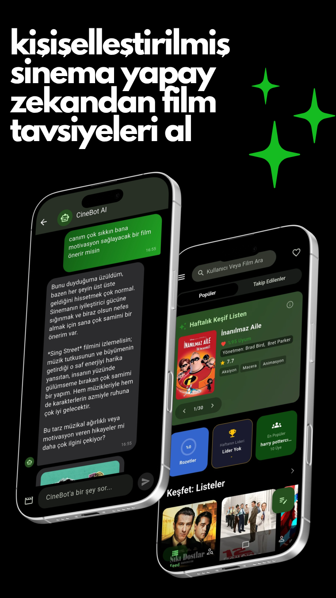

CineBot / Ne izlesem
Bazen aradığın filmin türü yoktur; yalnızca bir havası vardır.
“Yağmurlu bir pazar akşamına benzeyen bir film” yeterli bir tariftir. CineBot sevdiğin filmleri hesaba katar; gerisini konuşarak daraltırsın.
- Bir cümleyle ara
- Haftalık seçkine dön
- Seçimin nereden geldiğini oku